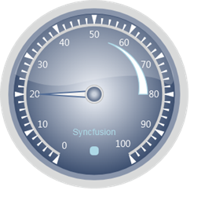

Step 1:
Add the below code in your aspx file.
|
View[ASPX]
<%@ Page Language="C#" MasterPageFile="~/Views/Shared/Site.Master" Inherits="System.Web.Mvc.ViewPage" %> <asp:Content ID="Content1" ContentPlaceHolderID="TitleContent" runat="server"> Circular Gauge </asp:Content>
<asp:Content ID="Content2" ContentPlaceHolderID="MainContent" runat="server">
<%--Rendering the Circular Gauge--%> <%=Html.Syncfusion().CircularGauge("Gauge",(CircularGaugeModel)ViewData["GaugeModel"])%>
</asp:Content> |
|
View[cshtml]
@{ Layout=”~/Views/Shared/_Layout.cshtml”; ViewBag=”Circular Gauge”; } <div> @*--Rendering the Circular Gauge--*@ @Html.Syncfusion().CircularGauge("Gauge",(CircularGaugeModel)ViewData["GaugeModel"])
</div> |
Include the following namespaces in the HomeController.
· Syncfusion.Mvc.Gauge
· Syncfusion.Mvc.Shared
· System.Windows.Media
Controller:
Step 2:
Add the following code in your controller.
|
using System; using System.Collections.Generic; using System.Linq; using System.Web; using System.Web.Mvc; using Syncfusion.Mvc.Gauge; using Syncfusion.Mvc.Shared; using System.Windows.Media;
namespace CircularGauge.Controllers { [HandleError] public class HomeController : Controller { public ActionResult Index() { //creating the circular gauge. CircularGaugeModel model = new CircularGaugeModel(); //Setting the radius of the circular gauge. model.Radius = 160; model.GaugeSkins = GaugeSkins.VS2010; model.FrameType = GaugeFrameType.CircularWithInnerTopGradient; //creating the scale element. CircularScale c_Scale = new CircularScale(); c_Scale.Maximum = 100; c_Scale.Minimum = 0; c_Scale.MinorIntervalValue = 2; c_Scale.MajorIntervalValue = 10; c_Scale.GapSweepAngle = 300; c_Scale.Radius = 120; c_Scale.StartAngle = 120; c_Scale.ScaleBarSize = 4.5; c_Scale.PointerCapRadius = 8; c_Scale.BackgroundBrush = Brushes.LightGray;
//creating minor tick element. TickMark _minor = new TickMark(); //Specifying the height and width for the minor ticks. _minor.TickStyle = TickStyle.MinorTick; _minor.TickWidth = 2; _minor.TickHeight = 9; //Specifying the shape of the minor ticks. _minor.TickShape = TickShape.Triangle; //Setting the position for the minor ticks. _minor.TickPlacement = ScalePlacement.Outside; _minor.Angle = 0; _minor.BackgroundBrush = Brushes.White;
//Creating major tick element. TickMark _major = new TickMark(); _major.TickStyle = TickStyle.MajorTick; //Specifying the height and width for the major ticks. _major.TickHeight = 14; _major.TickWidth = 7; //Specifying the shape of the major ticks. _major.TickShape = TickShape.Triangle; //Setting the position for the major ticks. _major.TickPlacement = ScalePlacement.Outside; _major.Angle = 0;
//Creating label element. GaugeLabelTick c_LabelTick = new GaugeLabelTick(); //Setting the labels for the major tick. c_LabelTick.TickStyle = TickStyle.MajorTick; //Setting the font size for the labels. c_LabelTick.FontSize = 16; //Setting the position of the labels. c_LabelTick.DistanceFromScale = 5; c_LabelTick.TickPlacement = ScalePlacement.Inside; c_LabelTick.Angle = 0; c_LabelTick.BackgroundBrush = Brushes.White;
//Creating the custom label element. GaugeCustomLabel custom_Label = new GaugeCustomLabel(); custom_Label.BackgroundBrush = Brushes.LightBlue;
//Specifying the font size for the label. custom_Label.FontSize = 15;
//Specifying the value for the custom label. custom_Label.LabelValue = "Syncfusion";
//Setting the location of the custom label. custom_Label.Location = new System.Windows.Point(50, 70);
//Creating pointer element. CircularPointer c_Pointer = new CircularPointer(); //Specifying the length and width of the pointer. c_Pointer.PointerLength = 90; c_Pointer.PointerWidth = 12; c_Pointer.BorderWidth = 2; //Setting the pointer type to Needle. c_Pointer.PointerNeedleType = PointerNeedleType.Needle; //Specifying the value for the pointer. c_Pointer.Value = 20; //Setting the needle style. c_Pointer.NeedleStyle = NeedleStyle.Triangle;
//Creating range element. CircularRange c_Range = new CircularRange(); //Specifying start value and end value for the range. c_Range.StartValue = 55; c_Range.EndValue = 80; //Specifying start width and end width for the range. c_Range.StartWidth = 0; c_Range.EndWidth = 15; //Setting BackgroundBrush and BorderBrush for the range. c_Range.BorderBrush = Brushes.LightBlue; c_Range.BackgroundBrush = Brushes.White; //Setting the position of the range. c_Range.RangePosition = ScalePlacement.Inside; c_Range.DistanceFromScale = 25;
//Creating indicator element. StateIndicator s_Indicator = new StateIndicator(); //Specifying the height and width for the state indicator. s_Indicator.IndicatorHeight = 15; s_Indicator.IndicatorWidth = 15; //Setting the style for the indicator. s_Indicator.IndicatorStyle = IndicatorStyle.RoundedRectangularLED; //Setting the location of the indicator. s_Indicator.Location = new System.Windows.Point(50, 80); s_Indicator.BackgroundBrush = Brushes.LightBlue;
//Adding the pointer element to the Circular Gauge. c_Scale.Pointers.Add(c_Pointer); // Adding major and Minor Tick elements. c_Scale.Ticks.Add(_minor); c_Scale.Ticks.Add(_major); //Adding Labels for the Circular Scale. c_Scale.Labels.Add(c_LabelTick); //Adding the Range into circular scale. c_Scale.Ranges.Add(c_Range); //Adding the State Indicator in the Circular Gauge. model.StateIndicators.Add(s_Indicator); //Adding the Scale element in Circular Gauge. model.Scales.Add(c_Scale); model.CustomLabel.Add(custom_Label); ViewData["GaugeModel"] = model; return View(); } } } |
 Note:
Note:
It is important that the Control ID(here control ID is "GaugeModel") used in the Index.aspx file and in the HomeController.cs file should match to ensure binding of the properties to the control.
Step 3:
Run the code. It will generate the following output.

Figure 51: Circular Gauge
A sample which demonstrates a Complete Circular Gauge control can be downloaded from the below mentioned link.
Download Samples:
Note: The version number for the assemblies
has been set to 9.4.0.62 in the Web.config file of the attached sample.